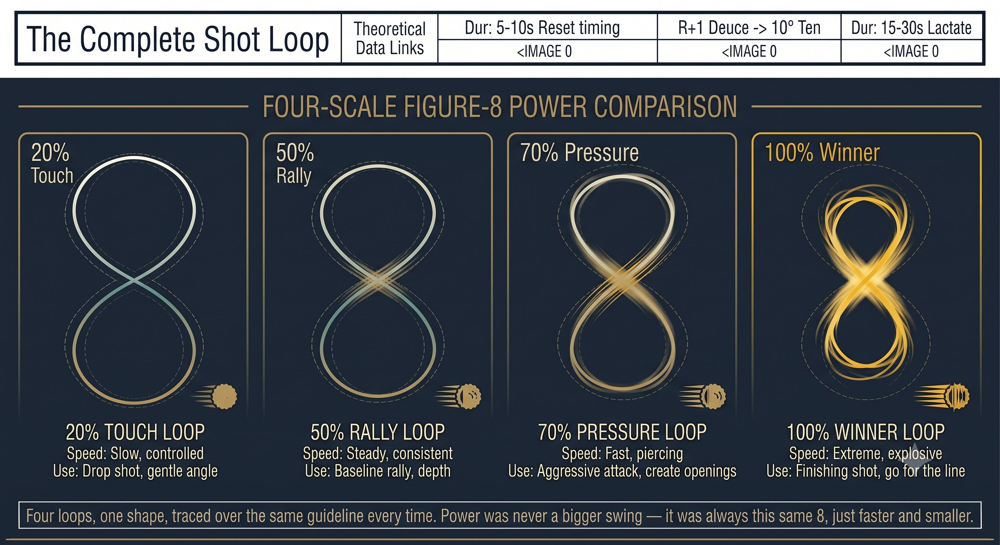

Chapter 30: The Unified System
(English version of Chapter 30 in the United Tennis Handbook)
CHAPTER 30

Figure 1
THE UNIFIED SYSTEM
Q-V-ROOT-8-45-Impulse Quick Reference
One page. The entire system. Keep it in your bag. Glance at it before every match.
The Complete Q-V-ROOT-8-45-Impulse-Jin Stack
Figure 30.1: Nine variables, one page, every chapter's icon in one place. This is the chart the rest of the book has been building toward since Chapter 11 — if you only ever laminate one page from this handbook, it's this one.

Figure 2
The Complete Shot Loop (0.8 Seconds)
Figure 30.2: Eight-tenths of a second, eight checkpoints, one loop. Every stroke in this entire book compresses into this one timeline — the swing is fast, but it was never actually a mystery.

Figure 3
Pre-Point Reset (5 Seconds)
1. Feet to ground: a tripod press (big toe, little toe, heel). The inner arch lifts. Feel the spiral and back line engage.
2. Head to level: chin tucked (a peach held under the chin). One slow left-right turn. The vestibular system settles.
3. Hands to 3/10: squeeze to 8/10, then drop to 3/10. Wiggle the fingers. The forearm stays soft.
4. Core questions: "Where am I? What ball? What face? What grip? Where does contact happen? What takeback? What tension?"
Forehand Push: Body Scan
Arch (back foot) to oblique to head still to eyes park to push.
– Load: the back foot screws in, the oblique stretches, the chest opens, the wrist stays loose.
– Park: the head stops. The eyes jump to the contact zone (30cm in front, at waist height). "Park."
– Execute: the chest fires first, then the oblique, then the chest, then the palm. The palm pushes through 12 inches.
– Brake: the front leg stomps, the front hip hits a wall. The obliques stop the torso.
– Pulse: a one-inch penetrating push. Not a swing. The palm pushes through the ball.
– Hold: the eyes and head stay parked. Hear contact before you see the result.
– Fault: a bicep burn or elbow sting means the line broke at the shoulder. Reset: the back foot screws, the chest pushes the hand.
Backhand Saber: Body Scan
Glute (back foot) to lat to head side-on to eyes park to saber.
– Load: the front foot steps across, the back hip loads. The non-dominant hand pulls the racket back — feel the hip-to-lat stretch. Elbow high.
– Park: the head stops, side-on. Chin over the front shoulder. The eyes jump to contact (30cm in front or to the side, chest high). "Park."
– Execute: the hips start forward while the racket still goes back — a counter-movement. The lat pulls the elbow down, the edge slices down behind the ball.
– Brake: the chest stays side-on. The front foot root holds. The back foot pushes, and shear snaps the lat.
– Pulse: a 3-inch downward chop through the ball. The edge leads, the face squares at the last instant.
– Hold: the eyes and head stay side-on. Chin over the shoulder until the ball crosses the net.
– Fault: a wrist flick or shoulder shrug means you lost the lat connection. Reset: elbow high.
Power Regulation: Same 8, Different Size and Speed
Figure 30.3: Four loops, one shape, traced over the same guideline every time. Power was never a bigger swing — it was always this same 8, just faster and smaller.

Figure 4
PRINCIPLE: You don't change the swing for power. You change the size and speed of the 8. Same loop, same SSC, same braking — just a different size and speed. Tensegrity stays loaded.
Fault Diagnosis: Work Backwards
Figure 30.4: Six symptoms, six chains, one method: work backward from the ball flight to the root cause, one checkpoint at a time. This is every fault card in the book, collapsed into a single page you can actually use mid-match.

Figure 5
The One-Breath Cue for Matches
SCREW FEET TO ROOT. HEAD STILL. EYES PARKED. SMALL 8 ON A 45-DEGREE GLASS PLANE. BRAKE HARD. ONE-INCH PULSE.
Say it silently before every point. It activates the full stack, from the ground to Jin:
– Screw feet: Root (tripod plus arch) activates the tensegrity base.
– Head still: V (vestibular) quiets the VOR and VSR. The platform is stable.
– Eyes parked: Q (Quiet Eye) locks the contact zone. The CORE loop is primed.
– Small 8: the figure-8 stays continuous, no pause. The SSC loads.
– On a 45-degree glass plane: drive and spin unify.
– Brake hard: the front leg or hip stops. Energy transfers upward.
– One-inch pulse: Fa Jin releases through the tensegrity. A heavy ball.
RULE: This isn't a checklist to think through. It's a body state. Train until "screw feet, head still, eyes park, small 8, brake, pulse" is your ready position.
Complete System Architecture
Figure 30.5: Eight layers, one tower, the last time this book draws it. Every diagram since Chapter 9 has been a smaller sketch of this exact structure — this is the finished version.
Training Priorities: What to Practice
This quick reference card contains the entire Q-V-ROOT-8-45-Impulse-Jin system. Chapters 1 through 29 provide the deep theory, the biomechanics, and the drills. This card is for match-day and practice reminders. Print it. Laminate it. Keep it in your bag.
SCREW FEET. HEAD STILL. EYES PARK. SMALL 8 ON 45. BRAKE. PULSE. THÍNH. HÓA. PHÁT.
– Pre-match: print this card. Read it once. Put it in your bag.
– Pre-point: the 5-second reset (feet, head, hands, core questions).
– At the bounce: "park" (eyes jump). The head freezes. The feet screw in.
– Swing: a small 8 on a 45-degree glass plane. A fast crossover. Brake hard.
– Contact: the palm pushes through (forehand), or the edge slices down (backhand). A one-inch pulse.
– Hold: the eyes and head stay put. Hear contact. Count "through."
– If there's an error: don't fix the face. Ask: is the head still? Are the eyes parked? Is the root solid? Is the 8 smooth? Is the brake hard?
– Under pressure: the routine stays the same. "Screw. Still. Park. 8. Brake. Pulse." Breathe.